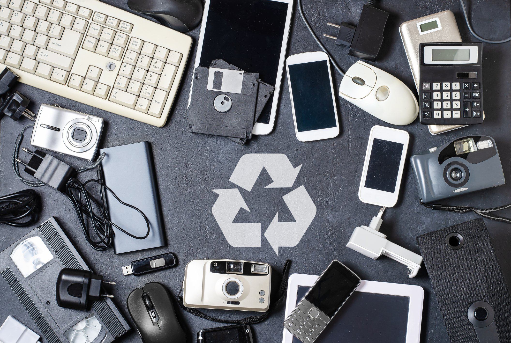
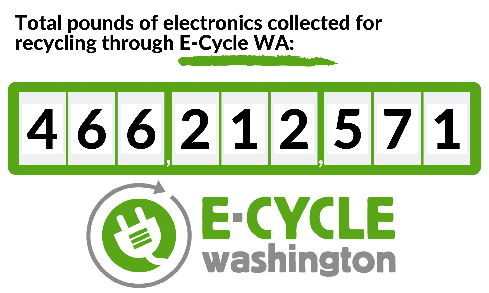

What to do with: E-Waste

Before recycling an electronic product, consider reusing it.
Reusing an item saves about 20 times as much energy as recycling it. Materials like rare earth metals are lost in
the electronics recycling process.
Before Recycling, Consider:
-
Giving the item to a neighbor.
-
Donating the electronic to a company or organization that might accept such items.
-
Ex: Secure the Call Takes old phones as 911 phones for domestic violence victims.
-
-
Repair minor damage to keep the product in use.
Kirkland Curbside Recycling
If these options are unavailable, you can recycle the following items by simply putting
them BESIDE your normal blue recycling cart. Please make sure you don’t put it inside the cart, as it will be
destroyed. Accepted items include:
-
Microwaves
-
TVs up to 21’ in size
-
General PC Peripherals (Speakers, Cables, Keyboards & Mice, Monitors, etc.)
-
Laptops
-
E-Readers
-
Printers, Fax Machines, Scanners, Copy Machines
-
Handheld devices (Phones, Mp3 Players, Tablets, Calculators)
-
DVD & Blu-Ray players
-
VCRs
-
Audio Equipment
Please ensure each item is smaller than 2 feet x 2 feet x 2 feet and no more than 60 pounds.
E-Cycle Washington
If your item is not within that list, residents and businesses with fewer than 50
employees can recycle electronics through E-Cycle Washington for free. Items that can be dropped off through this
program include:
-
Televisions
-
Computers
-
Laptops
-
Computer monitors
-
E-readers
-
Tablets
-
Portable DVD players

The collection sites for WA residents are as follows:
Pacific Power Batteries of Kirkland
13205 NE 124th St #A, Kirkland, WA 98034
(425) 820-3727
PC Recycle
5817 238th St SE, Woodinville, WA 98072
(425) 881-4444
Goodwill Juanita
9826 NE 132nd St, Kirkland, WA 98034
(425) 823-7430
Find more WA drop-off zones
here.
Other Options
If none of these locations are accessible, Staples and Best Buy accept printers, toner cartridges, keyboards, and
many other small electronics for recycling free of charge.
Explore some other options
here.
Cell phones can alternatively be dropped off at Kirkland City Hall and Goodwill. Locations can be found at
call2recycle.org.
Recycle microwaves and other small corded mostly-metal machines can be used as scrap metals. If that interests
you, look at locations in
Bellevue,
or
Shoreline.
If it interests you, you can also go electronic recycling events for WA state. Reminders and dates are shown
here.